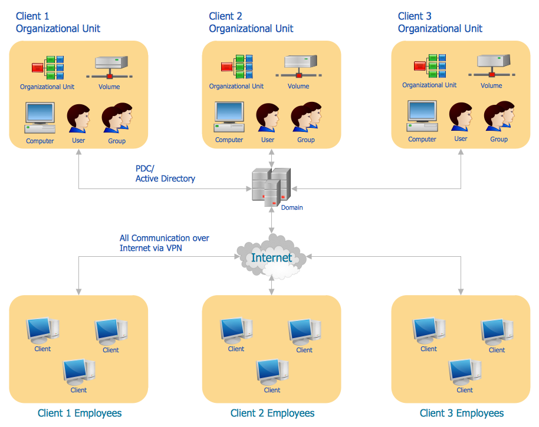
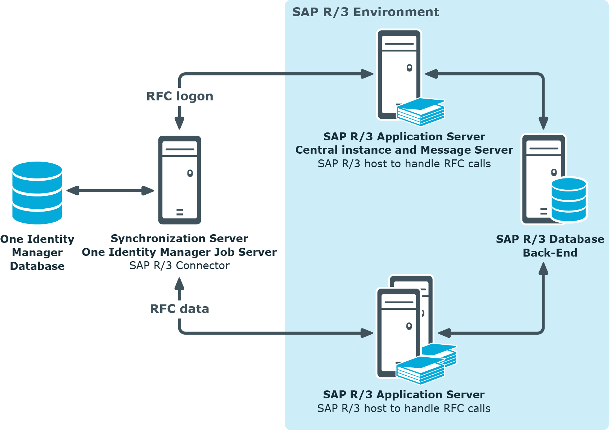

Linux File Editor
There are several standard text editors available on most linux system
vi-->Visual editor
ed-->Standard line editor
ex-->Extended line editor
emacs-->A full screen editor
pico-->Beginner's editor
vim-->Advance version of vi
Our editor = vi (available in almost every Linux distribution)
vi supplies commands for:
-Inserting and deleting text
-Replacing text
-Moving around the file
-Finding and substituting strings
-Cutting and pasting text
Most common keys:
i-->insert (to able to write)
these commands not in insert mode:
Esc-->Escape out of any mode
r-->replace
d-->delete
u-->to back step like ctrl+z
x-->to delete one character
/<word you want to search>
:q!-->quit without saving
:wq!-->quit and save
shift+zz-->quit and save when you are in insert mode
----------------------------------------------------------------------------
"sed" Command
-Replace a string in a file with a newstring
-Find and delete a line
-Remove empty lines
-Remove the first or n lines in a file
-To replace tabs with spaces
-Show defined lines from a file
-Substitute within vi editor
ex:
#sed -i 's/Kenny/Lenny/g' seinfeld
(replace Kenny with Lenny in seinfeld file if you want to not replace but show the output don't use -i)
ex:
#sed '/seinfeld/d' seinfeld
(delete seinfeld character in seinfeld file)
ex:
#sed -i '/^$/d' seinfeld
(to delete any empty line)
ex:
#sed '1,2d' seinfeld
(delete first 2 lines)
ex:
#sed -n 12,18p seinfeld
(to see lines from 12 to 18)
ex:
#sed 12,18d seinfeld
(to see all lines expect 12 form 18 lines)
ex:
#sed '8!s/Seinfeld/s/' seinfeld
(to replace Seinfeld word with s expect in line 8)
------------------------------------------------------------------------------
User Account Management
Commands:
useradd
groupadd
userdel
groupdel
usermod
Files:
/etc/passwd
/etc/group
/etc/shadow
ex:
useradd -g superheros -s /bin/bash -c "user description" -m -d /home/ironman ironman
ex:
#su -
#useradd spiderman
#id spiderman
#cat /etc/group
#cat /etc/passwd
ex:
#useradd superheros
#usermod -G superheros spiderman
(add spiderman user to superheros group)
#grep spiderman /etc/group
(to search spiderman and group)
#chgrp -R superheros spiderman
(to make superheros group with spiderman in all permissions of files and folder because it's spiderman by default)
ex:
#passwd spiderman
#su - spiderman
--------------------------------------------------------------------------------------
Switch Users and sudo Access
sudo: it's basically a command that allows an ordinary user to execute commands at the root level
1-Commands
su - <username>
sudo command
(you run this if you don't have root privileges but still need to run certain commands)
visudo
(configuration file that allows the user to add or remove rights)
2-File
/etc/sudoers
-----------------------------------------------------------------------------
Monitor Users
-system adminstrator must monitor users and what they are doing in our system
Commands
who
(who will tell you how many people logged in userid,terminalid,time)
last
(to see last logins)
w
finger
id
(give you information about your ownself)
ex:
#last | awk '{print $1}' | sort | uniq
change hostname:
1-Edit /etc/sysconfig/network
(optional)
NETWORKING=yes
NETWORKING_IPV6=no
HOSTNAME=ibrahim
2-Edit /etc/hosts
127.0.0.1 ibrahim
3- root@localhost#hostname ibrahim
Note: if you don't have permission to write use #sudo chmod a+w hosts
------------------------------------------------------------------------------
Talking to Users
users
(to know which users use machine)
wall
(to send messages to users if you want to make maintance to you linux machine)
write
(to send message to specific user)
Note: Remeber to log as root
--------------------------------------------------------------------------------
Linux Account Authentication
-We don't actually create user accounts individually on each server, so we add directory server in which the user can log in to have authentication to a different servers
-what if you have to create a user account to 10000 different servers then you have to have one domain or directory account on a server
Types of Accounts:
1-Local accounts: you create a user account on linux machine by running a useradd command
2-Domain/Directory accounts
Windows = Active Directory
Linux=LDAP
-when we want to log in server we use ssh protocol (putty), when we use active directory server to log in to client server we use protocol called ldap to authnticate against a directory
-------------------------------------------------------------------------------------
Difference between Active Directory,LDAP,IDM,WinBIND,OpenLDAP etc
Active Directory:is a
directory service that centralizes the management of users, computers and other objects within a network. Its primary
function is to authenticate and authorize users and computers in a windows domain,It is included in most Windows Server operating systems as a set of processes and services

IDM:Identity management, also known as identity and access management, is a framework of policies and technologies for ensuring that the proper people in an enterprise have the appropriate access to technology resources. IdM systems fall under the overarching umbrellas of IT security and data management
OpenLDAP: it's like active directory and IDM but it's free unlike IDM for redhat with money and it used specifically used for linux and unix

WindBind: Used in Linux to communicate with windows (Samba)
IBM Directory server
jumpCloud
Note: all the above is directory services but LDAP not, if you are downloading any of the above directory services, you need a protocol to communicate to it (LDAP)
LDAP: light weight directory access protocol
What are the differences between LDAP
LDAP was originally a protocol, Lightweight Directory Access Protocol, and is now a directory service specification in its own right, including all kinds of schemas and extras.
There is no such thing as 'Active OpenLDAP'. There is however OpenLDAP, which is an open-source implementation of LDAP, both server and client.
---------------------------------------------------------------------------
System Utility Commands
date
(to tell us date)
uptime
(how long system is up and how many users have been registered and the average load)
hostname
uname
which
(tell you where the file of any command, most of the commands are located in /usr/bin)
cal
(give a calendar)
bc
(it's a calculator)
ex:
#which pwd
ex:
#cd /usr/bin
#ls -l | wc -l
(to know how many linux commands in a machine)

------------------------------------------------------------------------------------------------------------------------------------------------------------------------------
Processes and Jobs
Application=Service
(like word,powerpoint,firefox)
Script
(something is written in a file and packaged it in a way that will run, so any application running on your computer such as Apache, you should run it as script and also commands are also referred as scripts)
Process
(process is created when you run application)
Daemon
(something continously run in the background until interrupted, so when run a daemon that is also a process but continues run and listening for incoming or outgoing traffic)
Threads
(every process can have multiple threads)
Job
(Run a service or process at schedule time)
----------------------------------------------------------------------------
Process / Services Commands
systemctl or service
(command to start service like apache)
ps
(to see what processes are running on your Linux system)
top
(you will see all your processes running in your system depending on its load and it tells us the information about your memory,cpu that is used by that process)
kill
(kills the process, you can use process name or process ID)
crontab
(used to schedule your processes or your applications so it turn into a job)
at
(it's like crontab but it's one time basis or ad hoc process)
-------------------------------------------------------------------------
ntp
(is application that run all the time "daemon" for network time protocol that synchronizes yours to other clocks, it's now replaced by chronyd service)
ex:
#systemctl restart chronyd
(d stands for daemon)
ex:
#ps -ef | grep chronyd
(to see if it running)
ex:
#systemctl enable chronyd
(every time my computer starts, it will start)
ex:
#systemctl status rsyslog
ex:
#kill <process ID>
-----------------------------------------------------------------------------
Additional Cron Jobs
-By default there are 4 different types of cronjobs
-Hourly
-Daily
-Weekly
-Monthly
All the above crons are setup in /etc/cron.___(directory)
The timing for each are set in /etc/anacrontab -- except hourly
For hourly /etc/cron.d/0hourly
ex:
#su -
#cd /etc
#ls -l | grep cron
----------------------------------------------------------------------------------
Process Management
background=ctrl-z, jobs and bg
(jobs to see what commands has stopped,ctrl-z to stop command like sleep 100,bg make the process running in the background)
ex:
#sleep 100
ctrl+z
#jobs
#bg
#jobs
foreground=fg
(fg make the process running in foreground in front of you)
Run process even after exit = nohup process &
OR = nohup process > /dev/null 2>&1 &
(to make the process continue even if you close the terminal ex: #nohup sleep 100 &)
kill a process by name = pkill
Process priority = nice (#nice -n 5 process)
-th niceness scale goes from -20 to 19, the lower the number the more priority that task gets
Process monitoring = top
List process = ps
-------------------------------------------------------------------------
System Monitoring
top
(to show you the processes running)
df
(disk partition information, ex: df -h)
dmesg
(gives you the output of error messages related to system errors)
iostat
(input output statistics, describe what is happening when we are communicating with our system peripheral devices or system internal devices even if it's desk or a network)
netstat -rnv
(to know gateway and genmask)
free
(show you physical memory and swap space which is a use of virtual memory)
cat /proc/cpuinfo
cat /proc/meminfo
--------------------------------------------------------------------------
Log Monitoring
Log Directory=/var/log
logs in /var/log:
boot
chronyd=NTP
cron
maillog
secure
messages
(the most important log, have all hardware and software information, all process information, everything)
httpd
ex:
#grep -i error messages
ex:
#cd /var/log
#more secure
------------------------------------------------------------------------
System Maintenance Commands
shutdown
init 0-6
(0 to shutdown 6 to reboot 3 to put it in multi-user mode)
reboot
halt
(halt shutdown immediately even if processes running)
---------------------------------------------------------------------------
Changing System Hostname
#hostnamectl set-hostname <newhostname>
OR
Version 7,8 = Edit /etc/hostname
Version 6 = Edit /etc/sysconfig/network
----------------------------------------------------------------------
Finding System Information
cat /etc/redhat-release
uname -a
dmidecode
----------------------------------------------------------------------
System Architecture
What's the
difference between the Intel Core
i5 vs Core
i7?
You might think it's the number of cores, but for the most part desktop Core
i5 processors have four cores, just like i7s. Intel Core
i7 processors generally have faster base clock speeds, or in other words they have more Ghz
Differences between a 32-bit and 64-bit CPU?
A big difference between 32-bit processors and 64-bit processors is the number of calculations per second they can perform, which affects the speed at which they can complete tasks. 64-bit processors can come in dual core,quad core,six core and eight core versions for home computing. Multiple cores allow for an increased number of calculations per second that can be performed, which can increase the processing power and help make a computer run faster. Software programs that require many calculations to function smoothly can operate faster and more efficiently on the multi-core 64-bit processors.
you can run 32-bit applications on 64-bit system but not vice versa
Linux=arch
windows=my computer-->properties
-------------------------------------------------------------------------
Terminal Control Keys
-Several key combinations on your keyboard usually have a special effect on the terminal
CTRL-u
(erase everything you've typed on the cmd)
CTRL-c
(stop/kill a command)
CTRL-z
(suspend a command)
CTRL-d
(exit from an interactive program (signals end of data))
---------------------------------------------------------------------------
Terminal Commands
clear
(clears your screen)
exit
(Exit out of the shell, terminal or a user session)
script
(The script command stores terminal activities in a log file that can be named by a user, when a name is not provided by a user, the default file name, typescript is used)
ex:
#script logfile.log
#......
#exit
---------------------------------------------------------------------------
Recover Root Password
1-Reboot your linux
2-first choice centOS Linux(.......)(core) press e
3-Edit grub(rw init=/sysroot/bin/sh)ctrl+x
4-#chroot /sysroot
5-#passwd root
6-#touch /.autorelabel
7-#exit
8-#reboot
---------------------------------------------------------------------------
SOS REPORT
it's an international code that is used by many people when they are in really deep trouble,so this is based on the same idea,RedHat or CentOS created something called SOS command and when you run it, it actually collects all the information about your files, your logs put it in a package and send them to them
Package name
sos-version
Command
sosreport